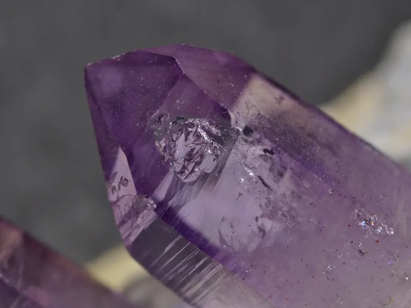

Research
Overview
Antimicrobial resistance is one of the most pressing global health threats, contributing to millions of deaths worldwide each year. Klebsiella pneumoniae, a WHO critical-priority pathogen, is among the top three bacteria driving AMR-related mortality. β-lactams remain the world’s most widely prescribed antibiotics, killing bacteria by binding Penicillin Binding Proteins (PBPs), but resistance enzymes called β-lactamases increasingly inactivate them, undermining their clinical value.
The Tooke lab is working to understand how β-lactam antibiotics engage PBPs and how β-lactamases counteract this action in K. pneumoniae. Combining structural biology, biochemistry, microbiology and computational methods, the project characterises these enzyme families, determines how antibiotics and inhibitors bind them, and identifies the factors governing affinity, selectivity, synergy and resistance, generating insight to guide the discovery and optimisation of future antimicrobial therapies.



Our approach
Work spans enzyme kinetics, X-ray crystallography, cryo-electron microscopy and emerging time-resolved methods, paired with computational modelling. Linking structural and functional data reveals how antibiotics, inhibitors and natural substrates interact with PBPs and β-lactamases, while novel dual inhibitors are tested against clinically relevant K. pneumoniae strains to identify promising therapeutic leads.
Together, these approaches build a fuller picture of β-lactam action and resistance, informing the design of improved antibiotics and inhibitor combinations. The fellowship is funded by the MRC Career Development Award, led by Dr Catherine Tooke at the University of Bath, running from July 2025 to June 2030.


Every structure the lab has deposited in the Protein Data Bank.
This work is only possible because of the sponsors and institutions who support it.

Grant references available on request.